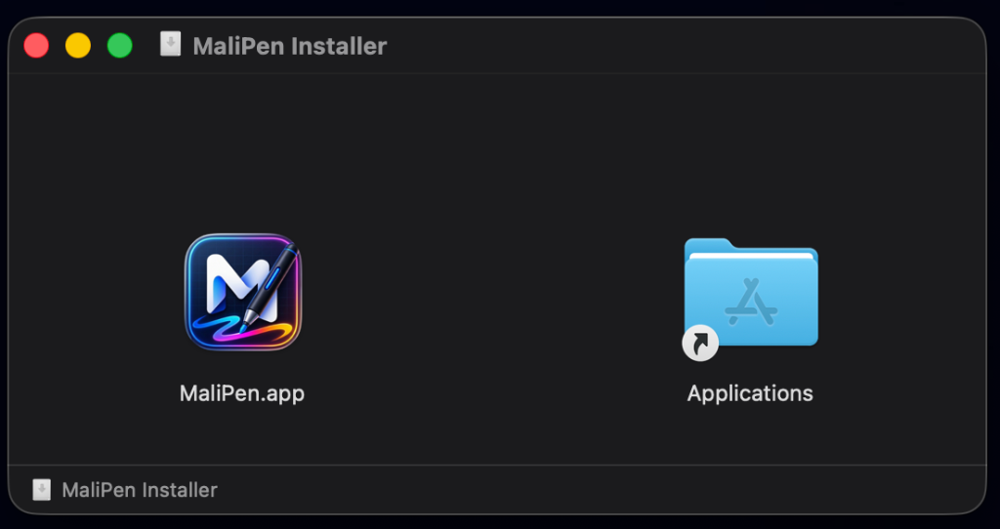
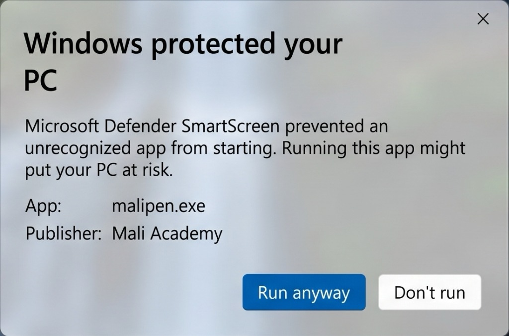
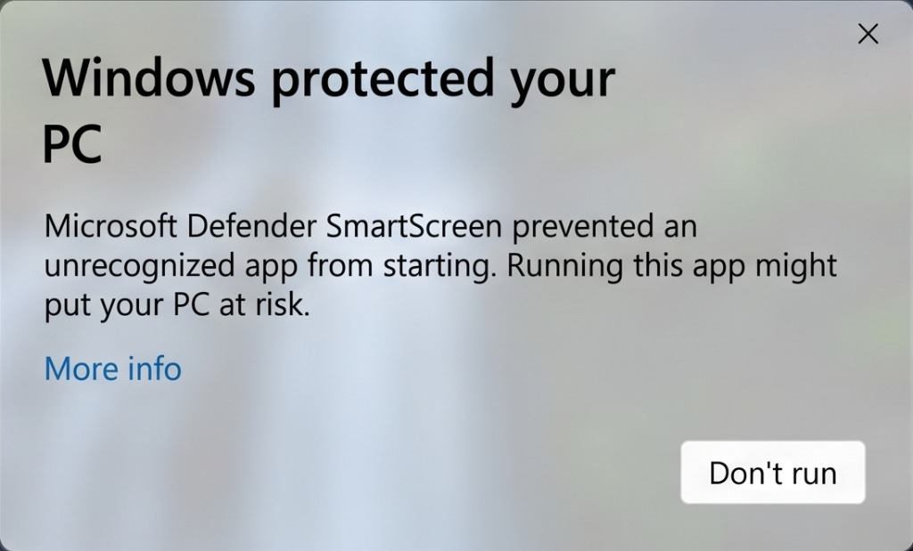

1
Drag to ApplicationsRequired
Open the downloaded DMG file and drag the MaliPen icon into your Applications folder.

2
Remove macOS QuarantineRequired
macOS blocks apps from unverified developers by default. Run this one-time command in Terminal (Spotlight → type "Terminal") to remove the restriction.
~ $
3
Grant System PermissionsRequired
MaliPen needs two macOS permissions to draw on your screen. You only need to do this once.
Screen Recording
System Settings → Privacy & Security → Screen Recording → enable MaliPen
Accessibility
System Settings → Privacy & Security → Accessibility → enable MaliPen
# Open Screen Recording settings directly:
~ $
4
Launch MaliPenReady
Open MaliPen from Launchpad or your Applications folder. The floating toolbar will appear on screen — you're ready to draw!
~ $
Download MaliPen for macOS
macOS 12 Monterey or later · Apple Silicon & Intel · Free
If the download doesn't start, click here.
1
Run the InstallerRequired
Double-click
MaliPen-windows.exe to begin installation.2
Bypass SmartScreen WarningRequired
Windows SmartScreen shows a warning for newly published apps. First, click "More info":

Then, click the "Run anyway" button to proceed with the installation:

3
If the App Won't Start: PowerShell FixOptional
If MaliPen doesn't launch after installation, open PowerShell as Administrator and run the command below.
# Set execution policy (one-time fix):
PS C:\>
4
Confirm UAC & StartReady
When MaliPen starts for the first time, Windows may ask for UAC permission. Click Yes. If a Firewall prompt appears, select "Allow access".
User Account Control (UAC)
"Allow this app to make changes?" → Yes
Windows Firewall
If prompted → "Allow access" on private and public networks
Download MaliPen for Windows
Windows 10 / 11 · 64-bit · Free
If the download doesn't start, click here.